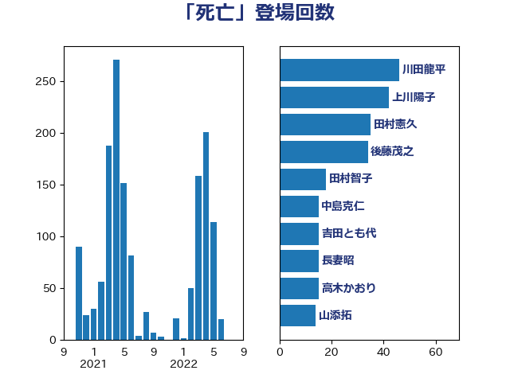

単語「死亡」

| 川田龍平 | 立憲民主党 | 46 回 |
| 上川陽子 | 自由民主党 | 42 回 |
| 田村憲久 | 自由民主党 | 35 回 |
| 後藤茂之 | 自由民主党 | 34 回 |
| 田村智子 | 日本共産党 | 18 回 |
| 中島克仁 | 立憲民主党 | 15 回 |
| 吉田とも代 | 日本維新の会 | 15 回 |
| 長妻昭 | 立憲民主党 | 15 回 |
| 高木かおり | 日本維新の会 | 15 回 |
| 山添拓 | 日本共産党 | 14 回 |
| 倉林明子 | 日本共産党 | 13 回 |
| 川合孝典 | 国民民主党 | 12 回 |
| 階猛 | 立憲民主党 | 12 回 |
| 宮本徹 | 日本共産党 | 11 回 |
| 福島みずほ | 社会民主党 | 11 回 |
| 阿部知子 | 立憲民主党 | 11 回 |
| 岸田文雄 | 自由民主党 | 10 回 |
| 石井苗子 | 日本維新の会 | 10 回 |
| 串田誠一 | 日本維新の会 | 9 回 |
| 吉田統彦 | 立憲民主党 | 9 回 |
| 山田勝彦 | 立憲民主党 | 9 回 |
| 石川大我 | 立憲民主党 | 9 回 |
| 高橋千鶴子 | 日本共産党 | 9 回 |
| 梅村聡 | 日本維新の会 | 8 回 |
| 西村康稔 | 自由民主党 | 8 回 |
| 石川博崇 | 公明党 | 7 回 |
| 古屋範子 | 公明党 | 6 回 |
| 古川禎久 | 自由民主党 | 6 回 |
| 嘉田由紀子 | 無所属 | 6 回 |
| 山井和則 | 立憲民主党 | 6 回 |
| 塩川鉄也 | 日本共産党 | 5 回 |
| 大口善徳 | 公明党 | 5 回 |
| 山下芳生 | 日本共産党 | 5 回 |
| 山本博司 | 公明党 | 5 回 |
| 本村伸子 | 日本共産党 | 5 回 |
| 米山隆一 | 立憲民主党 | 5 回 |
| 古賀之士 | 立憲民主党 | 4 回 |
| 山田太郎 | 自由民主党 | 4 回 |
| 東徹 | 日本維新の会 | 4 回 |
| 松沢成文 | 日本維新の会 | 4 回 |
| 柳ヶ瀬裕文 | 日本維新の会 | 4 回 |
| 水岡俊一 | 立憲民主党 | 4 回 |
| 浅野哲 | 国民民主党 | 4 回 |
| 秋野公造 | 公明党 | 4 回 |
| 藤井比早之 | 自由民主党 | 4 回 |
| 藤岡隆雄 | 立憲民主党 | 4 回 |
| 鈴木俊一 | 自由民主党 | 4 回 |
| 麻生太郎 | 自由民主党 | 4 回 |
| こやり隆史 | 自由民主党 | 3 回 |
| 井上哲士 | 日本共産党 | 3 回 |
| 伊藤岳 | 日本共産党 | 3 回 |
| 前川清成 | 日本維新の会 | 3 回 |
| 和田政宗 | 自由民主党 | 3 回 |
| 小西洋之 | 立憲民主党 | 3 回 |
| 梅村みずほ | 日本維新の会 | 3 回 |
| 横山信一 | 公明党 | 3 回 |
| 河野義博 | 公明党 | 3 回 |
| 浜田聡 | NHK党 | 3 回 |
| 清水貴之 | 日本維新の会 | 3 回 |
| 牧島かれん | 自由民主党 | 3 回 |
| 田中健 | 国民民主党 | 3 回 |
| 田島麻衣子 | 立憲民主党 | 3 回 |
| 竹内真二 | 公明党 | 3 回 |
| 羽生田俊 | 自由民主党 | 3 回 |
| 舟山康江 | 国民民主党 | 3 回 |
| 茂木敏充 | 自由民主党 | 3 回 |
| 菅義偉 | 自由民主党 | 3 回 |
| 鈴木貴子 | 自由民主党 | 3 回 |
| 三原じゅん子 | 自由民主党 | 2 回 |
| 三浦信祐 | 公明党 | 2 回 |
| 井坂信彦 | 立憲民主党 | 2 回 |
| 伊東信久 | 日本維新の会 | 2 回 |
| 伊藤孝江 | 公明党 | 2 回 |
| 佐藤英道 | 公明党 | 2 回 |
| 加田裕之 | 自由民主党 | 2 回 |
| 加藤勝信 | 自由民主党 | 2 回 |
| 務台俊介 | 自由民主党 | 2 回 |
| 國場幸之助 | 自由民主党 | 2 回 |
| 堤かなめ | 立憲民主党 | 2 回 |
| 塩村あやか | 立憲民主党 | 2 回 |
| 塩田博昭 | 公明党 | 2 回 |
| 大西健介 | 立憲民主党 | 2 回 |
| 安江伸夫 | 公明党 | 2 回 |
| 室井邦彦 | 日本維新の会 | 2 回 |
| 宮本岳志 | 日本共産党 | 2 回 |
| 寺田学 | 立憲民主党 | 2 回 |
| 小泉進次郎 | 自由民主党 | 2 回 |
| 山下雄平 | 自由民主党 | 2 回 |
| 山田宏 | 自由民主党 | 2 回 |
| 山際大志郎 | 自由民主党 | 2 回 |
| 岬麻紀 | 日本維新の会 | 2 回 |
| 岸真紀子 | 立憲民主党 | 2 回 |
| 市村浩一郎 | 日本維新の会 | 2 回 |
| 平木大作 | 公明党 | 2 回 |
| 打越さく良 | 立憲民主党 | 2 回 |
| 松本尚 | 自由民主党 | 2 回 |
| 枝野幸男 | 立憲民主党 | 2 回 |
| 柚木道義 | 立憲民主党 | 2 回 |
| 横沢高徳 | 立憲民主党 | 2 回 |
| 橋本岳 | 自由民主党 | 2 回 |
| 櫛渕万里 | れいわ新選組 | 2 回 |
| 江田憲司 | 立憲民主党 | 2 回 |
| 河西宏一 | 公明党 | 2 回 |
| 矢倉克夫 | 公明党 | 2 回 |
| 石橋通宏 | 立憲民主党 | 2 回 |
| 石田昌宏 | 自由民主党 | 2 回 |
| 穀田恵二 | 日本共産党 | 2 回 |
| 羽田次郎 | 立憲民主党 | 2 回 |
| 藤田文武 | 日本維新の会 | 2 回 |
| 西村智奈美 | 立憲民主党 | 2 回 |
| 角田秀穂 | 公明党 | 2 回 |
| 野上浩太郎 | 自由民主党 | 2 回 |
| 関芳弘 | 自由民主党 | 2 回 |
| 青木愛 | 立憲民主党 | 2 回 |
| 高橋光男 | 公明党 | 2 回 |
| 鰐淵洋子 | 公明党 | 2 回 |
| 黄川田仁志 | 自由民主党 | 2 回 |
| 上田清司 | 国民民主党 | 1 回 |
| 中川宏昌 | 公明党 | 1 回 |
| 中川郁子 | 自由民主党 | 1 回 |
| 井出庸生 | 自由民主党 | 1 回 |
| 仁木博文 | 無所属 | 1 回 |
| 今井絵理子 | 自由民主党 | 1 回 |
| 佐々木さやか | 公明党 | 1 回 |
| 勝目康 | 自由民主党 | 1 回 |
| 勝部賢志 | 立憲民主党 | 1 回 |
| 北側一雄 | 公明党 | 1 回 |
| 原口一博 | 立憲民主党 | 1 回 |
| 古賀友一郎 | 自由民主党 | 1 回 |
| 吉川ゆうみ | 自由民主党 | 1 回 |
| 吉良よし子 | 日本共産党 | 1 回 |
| 坂本哲志 | 自由民主党 | 1 回 |
| 城井崇 | 立憲民主党 | 1 回 |
| 大串博志 | 立憲民主党 | 1 回 |
| 大島敦 | 立憲民主党 | 1 回 |
| 太栄志 | 立憲民主党 | 1 回 |
| 宮崎政久 | 自由民主党 | 1 回 |
| 小宮山泰子 | 立憲民主党 | 1 回 |
| 小池晃 | 日本共産党 | 1 回 |
| 小沼巧 | 立憲民主党 | 1 回 |
| 山下貴司 | 自由民主党 | 1 回 |
| 山口那津男 | 公明党 | 1 回 |
| 山本香苗 | 公明党 | 1 回 |
| 岡本あき子 | 立憲民主党 | 1 回 |
| 岡本三成 | 公明党 | 1 回 |
| 岩渕友 | 日本共産党 | 1 回 |
| 岸信夫 | 自由民主党 | 1 回 |
| 川崎ひでと | 自由民主党 | 1 回 |
| 平口洋 | 自由民主党 | 1 回 |
| 後藤祐一 | 立憲民主党 | 1 回 |
| 徳永エリ | 立憲民主党 | 1 回 |
| 斉藤鉄夫 | 公明党 | 1 回 |
| 日下正喜 | 公明党 | 1 回 |
| 早稲田ゆき | 立憲民主党 | 1 回 |
| 有村治子 | 自由民主党 | 1 回 |
| 木村次郎 | 自由民主党 | 1 回 |
| 木村英子 | れいわ新選組 | 1 回 |
| 末松義規 | 立憲民主党 | 1 回 |
| 杉尾秀哉 | 立憲民主党 | 1 回 |
| 杉本和巳 | 日本維新の会 | 1 回 |
| 村井英樹 | 自由民主党 | 1 回 |
| 松川るい | 自由民主党 | 1 回 |
| 森まさこ | 自由民主党 | 1 回 |
| 森屋隆 | 立憲民主党 | 1 回 |
| 森山浩行 | 立憲民主党 | 1 回 |
| 武田良太 | 自由民主党 | 1 回 |
| 比嘉奈津美 | 自由民主党 | 1 回 |
| 池下卓 | 日本維新の会 | 1 回 |
| 沢田良 | 日本維新の会 | 1 回 |
| 浜地雅一 | 公明党 | 1 回 |
| 清水真人 | 自由民主党 | 1 回 |
| 渡辺周 | 立憲民主党 | 1 回 |
| 田所嘉徳 | 自由民主党 | 1 回 |
| 田村まみ | 国民民主党 | 1 回 |
| 田村貴昭 | 日本共産党 | 1 回 |
| 稲富修二 | 立憲民主党 | 1 回 |
| 稲津久 | 公明党 | 1 回 |
| 稲田朋美 | 自由民主党 | 1 回 |
| 笠井亮 | 日本共産党 | 1 回 |
| 自見はなこ | 自由民主党 | 1 回 |
| 萩生田光一 | 自由民主党 | 1 回 |
| 蓮舫 | 立憲民主党 | 1 回 |
| 西銘恒三郎 | 自由民主党 | 1 回 |
| 谷合正明 | 公明党 | 1 回 |
| 谷田川元 | 立憲民主党 | 1 回 |
| 豊田俊郎 | 自由民主党 | 1 回 |
| 赤嶺政賢 | 日本共産党 | 1 回 |
| 赤澤亮正 | 自由民主党 | 1 回 |
| 近藤和也 | 立憲民主党 | 1 回 |
| 遠藤敬 | 日本維新の会 | 1 回 |
| 野田国義 | 立憲民主党 | 1 回 |
| 野田聖子 | 自由民主党 | 1 回 |
| 野間健 | 立憲民主党 | 1 回 |
| 金村龍那 | 日本維新の会 | 1 回 |
| 鈴木庸介 | 立憲民主党 | 1 回 |
| 鈴木英敬 | 自由民主党 | 1 回 |
| 鎌田さゆり | 立憲民主党 | 1 回 |
| 長友慎治 | 国民民主党 | 1 回 |
| 長浜博行 | 無所属 | 1 回 |
| 阿部司 | 日本維新の会 | 1 回 |
| 阿部弘樹 | 日本維新の会 | 1 回 |
| 青山大人 | 立憲民主党 | 1 回 |
| 高良鉄美 | 無所属 | 1 回 |